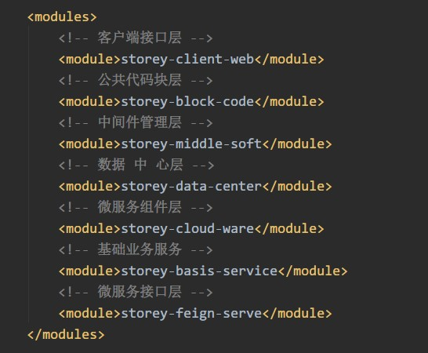
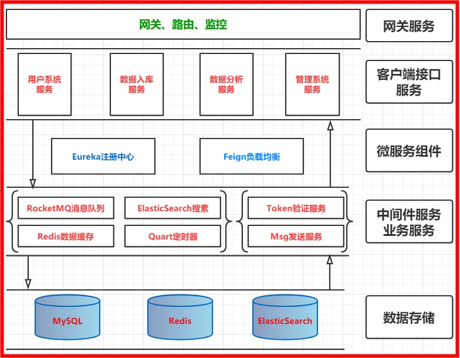

原文出处:本文由博客园博主知了一笑提供。
原文连接:https://www.cnblogs.com/cicada-smile/p/11736086.html
原文连接:https://www.cnblogs.com/cicada-smile/p/11736086.html
本文源码：GitHub·点这里 || GitEE·点这里
一、单体架构
单体架构在中等偏小的业务中比较常见，场景模式就是单个应用、单个数据库。一个程序包（例如war格式或者Jar格式）包含所有业务需求功能，这是一种比较传统的架构风格。
单体架构的缺陷
- 复杂性高,整个项目包含的模块多，依赖模糊，修改程序容易触发不可知问题。
- 扩展能力受限,单体应用只能整体进行扩展，无法针对业务模块的特性进行伸缩。
- 稳定性差,任何微小的问题，都可能导致整个应用服务直接挂掉。
二、微服务架构
微服务架构是一种架构概念，核心思想在于通过将业务功能和需求分解到各个不同的服务中进行管理，实现对业务整体解耦。围绕业务模式创建应用服务，应用服务可独立地进行开发、迭代、部署。使项目的架构更加清晰明确。
微服务优劣势
- 单个服务对应单个业务功能，方便理解，开发，维护;
- 服务独立部署，可以根据每个服务的请求量来部署满足需求的规模;
- 数据库，服务，架构，业务拆分等难度增大，对技术能力要求较高;
三、项目简介
微服务架构案例核心内容，基于SpringCloud框架几个核心组件，Eureka服务注册与发现组件，Feign声明式的WebService客户端组件，Zuul动态路由网关组件。进行多个数据管理，多个服务管理搭建，多个中间件集成，多业务拆分等模式，搭建SpringCloud微服务框架的综合应用案例。
核心模块
- 业务拆分架构设计
- 多个中间件服务集成
- 微服务下代码分块管理
- 多个MySQL数据源管理
四、技术选型
1、核心框架组件
1. 基础层框架：Spring5+，SpringBoot2+，SpringCloud2+
2. 持久层框架：mybatis，mybatis-plus
3. 开发组件：Druid，Log4j，FastJson，JodaTime，JavaMail
4. 中间件集成：RocketMQ，Redis，Quart，ElasticSearch
5. 数据存储：MySQL、Redis、ElasticSearch2、代码分层结构

五、项目架构
1、架构图解

2、架构说明
- 客户端接口服务
1. 用户端服务接口;
2. 管理端服务接口;
3. 数据入库服务接口;
4. 数据分析服务接口- 通用服务接口
1. RocketMQ消息队列服务 ;
2. ElasticSearch搜索引擎服务 ;
3. Quart定时器服务 ;
4. Redis缓存服务 ;
5. 基础业务：Token认证服务 ;
6. 基础业务：MsgBox消息中心服务 ;- 微服务组件
1. 路由网关：Zuul组件;
2. 服务注册与发现：Eureka组件;
3. 服务间调用组件：Feign组件;- 数据存储容器
MySQL、Redis、ElasticSearch六、源代码地址
GitHub·地址
https://github.com/cicadasmile
GitEE·地址
https://gitee.com/cicadasmile：项目技术选型简介，架构图解说明2.png)